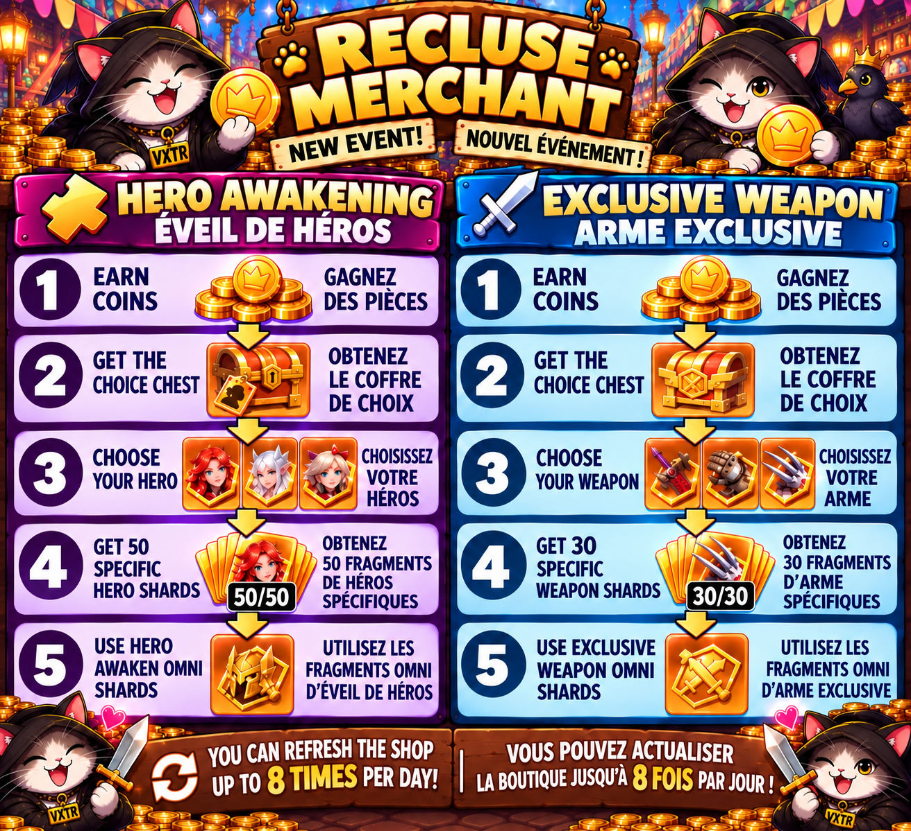

9. Events
Alliance Duel — Monday: Enhance Raven

Monday rewards Raven-focused progression and selected activity. Save the listed Raven resources so one upgrade also contributes to Alliance Duel. The finalized VEXTER3 graphic is the quick-reference authority for the scoring items.
Alliance Duel — Tuesday: Territory Development

Use construction progress, building Might, UR Covert Operations, UR Caravans, Survivor Recruitment, and Exclusive Weapon Shards according to the finalized graphic. When practical, hold major construction pushes for this day.
Alliance Duel — Wednesday: Tech Research

Research Speedups, Study Scrolls, Tech upgrades, Raven Gear Chests, and the other listed activities belong here. This is the natural day for planned research pushes.
Alliance Duel — Thursday: Hero Growth

Save Hero Recruitment, Hero Shards, Skill Badges, Antitoxin, and Hero Awakening Shards for Hero Growth when practical. Prioritize development of your primary squad rather than spending simply for points.
Alliance Duel — Friday: War Preparation

Friday combines troop preparation with several development categories. Training high-tier soldiers and using training speedups are major components, while construction/research activity can also contribute as shown on the graphic.
Alliance Duel — Saturday: Raid Day

Raid Day includes enemy troop defeats, healing speedups, UR Caravans, UR Covert Operations, and Falcon Quests. It also connects directly to weekend-war safety: if you are not actively fighting, shield before you log off.
Survival Battle
Survival Battle is a daily competition divided into multiple rounds with changing themes such as Build Territory, Train Soldiers, Technology Research, Enhance Raven, and Enhance Heroes. Each theme rewards the matching type of progression.
The important Alliance strategy is not to spend valuable resources just because Survival Battle is active. Whenever possible, wait until its theme also matches the current Alliance Duel day. That lets the same resource score in both events.
Each round has stage rewards, and Survival Medals accumulate toward daily milestone chests. Spend enough to reach worthwhile goals rather than emptying your inventory unnecessarily.
Cheese Trap
During Cheese Trap, let R4/R5 start the ralliesbecause their rallies provide the attack-damage buff. Members should join those rallies instead of competing with them by starting separate rallies.
Pandemic Experience
Personal Challenges are fought against Hell Nurses. Alliance Challenges involve Boss Enemies, with R4/R5 handling the Boss Challenges/rallies. Work through the highest difficulty you can reasonably complete.
If a level is causing significant troop losses, ask stronger alliance members for help and use rallies rather than repeatedly burning troops.
Difficulty 11: T10 troops required; 10 Hell Nurses.
Difficulties 1–9 use the longer Nurse progression.
Undead Siege
Undead Siege is an alliance defensive event. Alliance activity helps gather the clues needed for leadership to locate and schedule the event. Once started, the alliance faces 20 waves.
Your most important preparation is setting your strongest squad to defend your own Territory through Walls → Fortifications. This is an exception to the normal rule of keeping troops off the wall.
If another player is struggling, stronger members can reinforce them through Sanctuary → Reinforcement → Garrison. That menu is for reinforcing another player; it is not how you set your own defense.
Personal rewards depend on your own survival, while alliance performance benefits from members collectively surviving as many waves as possible.
Royal City Scramble
The normal personal objective is 100,000 Honor Points, not capturing the Royal City. You do not need to teleport your base into the mud; you can send a march to the fighting area.
Option 1: watch World Chat for resource-tile coordinates shared by other players. Send a march, hit the tile, batch heal, and repeat.
Option 2: occupy a resource tile yourself, share its coordinates in World Chat, and allow other players to hit you for points. You can alternate between attacking and being attacked.
Heal wounded troops in smaller batches so alliance assists can repeatedly reduce the timers. Once you reach 100K, you have reached the personal target unless leadership gives you another role.
Thief Hunt
Use your main/strongest squad for Boss Thief ralliesand your secondary squad for Gold Thieves on the World Map. Gold Thieves consume stamina. Joining Boss Thief rallies does not.
When you run out of stamina, stop hunting Gold Thieves but continue joining Boss rallies. Higher-level Boss Thieves are stronger and are rally targets rather than solo targets.
Crystal Cluster Valley

Crystal Cluster Valley is a roughly 30-minute individual PvP event. Everyone in the instance is competition, including alliance members. The troops used there are event troops, so losses do not permanently damage your normal army.
The goal is crystals. Lower-level crystal tiles are found farther out and higher-level tiles toward the center. Early in the match, kill map mobs to gain event XP and unlock the event skill progression, then keep your marches collecting.
Special fast-collection crystal opportunities can appear during the match; pull marches from normal tiles when those are worthwhile. Occupied tiles can be contested, and displaced players may drop crystals.
The central Throne opens late in the match. Strong players can contest it, but if you are not part of that fight, keep farmingrather than stopping your crystal income just because the center is active.
Canyon Conquest
Canyon Conquest is an offline event, but you must register to participate and receive rewards. Registration alone is not enough: edit/refresh your squad every dayso your newest hero, troop, gear, and power upgrades are reflected in the registered formation.
There are three lanes—Left, Middle, and Right—and the alliance needs to win two of them. Do not worry about arranging your own lane. R4/R5 handles positioning and distributes players strategically.
Demon King

Demon King is an individual damage event. Attack the Demon King directly rather than rallying it. Choose the faction that counters the current Demon:
Warlock → Warrior | Warrior → Ranger | Ranger → Warlock
Three attacks unlock the basic daily achievement progression; additional attacks can be used when you are pushing your total damage or event standing.
Hunt Battle
R4/R5 handles starting the event and choosing the difficulty. Your job as a member is simple: be there on time and participate. Only players who participate receive the participation reward. There is no requirement to prioritize the boss over everything else.
Elixir Scramble
Elixir Scramble is a short alliance-vs-alliance battle. Members must register for an available time slot they can actually play. Capture buildings, fight, and follow R4/R5 calls when they are given.
The two most important objectives for the alliance are the Immigration Portaland Elixir Castle. Beyond that, the strategy is intentionally loose: help your team, participate, and enjoy the chaos.
Recluse Merchant — Free Hero Awakening & Exclusive Weapon Shards
The Recluse Merchant is an opportunity to build up rare, hero-specific and weapon-specific upgrade materials without spending money. Earn the event currency through available activities, then check the merchant for the choice chests you need.

Two upgrade paths
Hero Awakening: Choose the hero you are investing in and collect 50 hero-specific Awakening Shards. Once you meet that requirement, you can use compatible Hero Awaken Omni Shards for additional progress.
Exclusive Weapon: Choose the weapon you are investing in and collect 30 weapon-specific Exclusive Weapon Shards. Once you meet that requirement, you can use compatible Exclusive Weapon Omni Shards for additional progress.
Merchant tip: You can refresh the shop up to 8 times per day. Check your available coins and refresh costs before spending. Focus your choices on the heroes and weapons in your primary squad rather than spreading rare materials across many upgrades.
9. Événements
Duel d'Alliance — Lundi: Amélioration du Corbeau
Gardez les ressources du Corbeau indiquées pour que vos améliorations rapportent aussi des points au Duel d'Alliance. L'image finalisée sert de référence rapide.
Duel d'Alliance — Mardi: Développement du territoire
Utilisez les accélérations de construction, améliorations de bâtiments, Opérations secrètes UR, Caravanes UR, recrutement de survivants et Fragments d'Arme Exclusive selon le graphique finalisé.
Duel d'Alliance — Mercredi: Recherche technologique
Accélérations de recherche, Parchemins d'étude, améliorations technologiques et Coffres d'équipement du Corbeau appartiennent naturellement à cette journée.
Duel d'Alliance — Jeudi: Croissance des héros
Gardez Recrutement de héros, Fragments de héros, Badges de compétence, Antitoxine et Fragments d'Éveil pour cette journée lorsque c'est pratique.
Duel d'Alliance — Vendredi: Préparation de guerre
L'entraînement de troupes de haut niveau et les accélérations d'entraînement sont importants; la construction et la recherche peuvent également contribuer selon le graphique.
Duel d'Alliance — Samedi: Jour de Raid
Jour de Raid inclut les troupes ennemies vaincues, accélérations de soin, Caravanes UR, Opérations secrètes UR et Quêtes du Faucon. Si vous ne combattez pas pendant la guerre du week-end, activez votre bouclier avant de vous déconnecter.
Bataille de Survie
La Bataille de Survie comporte plusieurs manches avec des thèmes changeants: construction, entraînement, recherche, Corbeau ou héros. Ne dépensez pas des ressources précieuses uniquement parce que l'événement est actif. Essayez de faire coïncider son thème avec le jour correspondant du Duel d'Alliance.
Piège à Fromage
Laissez les R4/R5 lancer les rallyes car leurs rallyes donnent le bonus de dégâts d'attaque. Les membres rejoignent ces rallyes au lieu d'en créer d'autres.
Expérience Pandémique
Les Défis personnels opposent aux Infirmières de l'Enfer. Les Défis d'Alliance concernent les Boss et sont lancés par les R4/R5. Si une difficulté vous coûte trop de troupes, demandez de l'aide.
Difficulté 11: troupes T10 requises; 10 Infirmières de l'Enfer.
Siège des Morts-Vivants
L'alliance affronte 20 vagues. Votre préparation la plus importante est de placer votre meilleure escouade sur votre propre Territoire via Murs → Fortifications. C'est l'exception à la règle habituelle de ne pas laisser les troupes au mur.
Pour aider un autre joueur: Sanctuaire → Renforcement → Garnison. Ce menu sert à renforcer quelqu'un d'autre, pas votre propre défense.
Ruée vers la Cité Royale
L'objectif personnel habituel est 100 000 points d'Honneur, pas la capture de la Cité Royale. Vous n'avez pas besoin de téléporter votre base dans la boue.
Option 1: surveillez le Chat Monde pour les coordonnées de cases de ressources, envoyez une marche, frappez la case, soignez par petits lots et recommencez.
Option 2: occupez une case de ressources et partagez ses coordonnées dans le Chat Monde pour que d'autres joueurs vous frappent. Une fois 100K atteint, votre objectif personnel est rempli sauf instruction différente.
Chasse aux Voleurs
Utilisez votre meilleure escouade dans les rallyes Boss et votre escouade secondaire contre les Voleurs d'Or. Les Voleurs d'Or consomment de l'endurance; rejoindre les rallyes Boss n'en consomme pas.
Vallée des Cristaux

C'est un événement PvP individuel d'environ 30 minutes. Tout le monde est concurrent, même les membres de l'alliance. Les pertes concernent les troupes de l'événement et n'endommagent pas définitivement votre armée normale.
Tuez des monstres tôt pour gagner l'XP d'événement, puis gardez vos marches sur les cristaux. Les cases plus fortes se trouvent davantage vers le centre. Des cristaux spéciaux à collecte rapide peuvent apparaître; déplacez vos marches si cela vaut le coup. Lorsque le Trône central ouvre en fin de partie, continuez à farmer si vous ne participez pas au combat central.
Conquête du Canyon
C'est un événement hors ligne, mais vous devez vous inscrire pour participer et recevoir les récompenses. Actualisez votre escouade chaque jourafin que les dernières améliorations de héros, troupes, équipement et puissance soient enregistrées.
Il y a trois voies. L'alliance doit en gagner deux. Les R4/R5 gèrent le positionnement; les membres n'ont pas à déplacer eux-mêmes leur voie.
Roi Démon
Attaquez individuellement, sans rallye. Les contres sont: Sorcier → Guerrier | Guerrier → Ranger | Ranger → Sorcier. Trois attaques débloquent la progression de base des récompenses quotidiennes; continuez si vous cherchez davantage de dégâts.
Bataille de Chasse
Les R4/R5 lancent l'événement et choisissent la difficulté. Votre priorité est simplement d'être présent à l'heure et de participer. Seuls les participants reçoivent la récompense de participation.
Mêlée d'Élixir
Choisissez un créneau que vous pouvez réellement jouer. Les deux objectifs les plus importants pour l'alliance sont le Portail d'Immigrationet le Château d'Élixir. Suivez les appels des R4/R5 lorsqu'il y en a, aidez l'équipe et profitez du chaos.
Marchand reclus — Fragments d’éveil et d’arme exclusive gratuits
Le Marchand reclus permet d’obtenir des matériaux d’amélioration rares pour des héros et des armes précis sans dépenser d’argent réel. Gagnez la monnaie de l’événement grâce aux activités disponibles, puis recherchez les coffres de choix qui vous intéressent.
Deux voies d’amélioration
Éveil de héros : choisissez le héros à améliorer et obtenez 50 fragments d’éveil spécifiques à ce héros. Une fois ce seuil atteint, vous pouvez utiliser les fragments Omni d’éveil de héros compatibles pour poursuivre l’amélioration.
Arme exclusive : choisissez l’arme à améliorer et obtenez 30 fragments spécifiques à cette arme exclusive. Une fois ce seuil atteint, vous pouvez utiliser les fragments Omni d’arme exclusive compatibles pour poursuivre l’amélioration.
Conseil : vous pouvez actualiser la boutique jusqu’à 8 fois par jour. Vérifiez vos pièces disponibles et les coûts d’actualisation avant de dépenser. Privilégiez les héros et les armes de votre escouade principale.